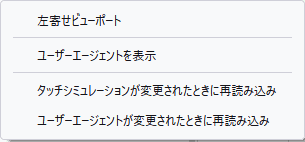

レスポンシブデザイン は、さまざまな端末、特にデスクトップやラップトップだけでなく、携帯電話やタブレットでも適切に表示および動作するウェブサイトを設計することです。
もっとも明らかな要素は画面のサイズですが、ほかにもディスプレイの画素密度やタッチをサポートするかといった要素があります。レスポンシブデザインモードは、さまざまな端末でウェブサイトがどのように表示および動作するかを確認するために、これらの要素をシミュレーションする手段を提供します。
レスポンシブデザインモードを切り替える方法は 3 つあります。
レスポンシブデザインモードを有効にすると、ウェブページのコンテンツ領域が特定の端末の画面のサイズに設定されます。初期状態は 320 x 480 ピクセルです。
メモ: レスポンシブデザインモードで選択した端末とその向き (縦または横) は、セッションをまたいで保存されます。

選択した端末の情報がディスプレイの中央に表示されます。表示内容は左から右に向かって次のようになっています。
画面の右端には 3 つのボタンがあり、次のようなことができます。
スクリーンショットは Firefox の既定のダウンロード先に保存されます。
開発者ツールの設定ページにある「スクリーンショットをクリップボードへコピー」がチェックされている場合、スクリーンショットはシステムクリップボードのにコピーされます。
設定メニューには次のようなコマンドがあります。

これらが変更されたときに再読み込みするようにすると、そうしないと適用されないページの動作があるため便利です。例えば、多くのページでは、ロード時にタッチの対応をチェックし、対応している場合にのみイベントハンドラーを追加したり、特定のブラウザーでのみ特定の機能を有効にしたりしています。
しかし、そのような機能を確認することに興味がない場合 (異なるサイズでの全体的なレイアウトを確認しているだけのような場合)、このような再読み込みは時間を浪費し、生産性の高い仕事を失う可能性があるため、これらの再読み込みを制御できると便利です。
現在は、このような設定を初めて変更したときに、再読み込みが自動的に行われなくなったことを示す警告メッセージと、再読み込みを自動的に行う方法についての情報が表示されるようになっています。例えば、以下のようになります。

レスポンシブデザインモード自体の切り替えとは別に、開発ツールのツールボックスを表示または非表示にすることができます。
 レスポンシブデザインモードを有効にした状態で、コンテンツ領域がリサイズされたまま通常どおりに閲覧を続けることができます。
レスポンシブデザインモードを有効にした状態で、コンテンツ領域がリサイズされたまま通常どおりに閲覧を続けることができます。
ビューポートのすぐ上に「no device selected」というラベルがあります。これをクリックすると、端末名の一覧が表示されます。端末を選択すると、レスポンシブデザインモードでは、選択した端末に合わせて以下のプロパティが設定されます。
さらに Firefox は HTTP の User-Agent リクエストヘッダーを、選択した端末の既定のブラウザーであると名乗るように設定します。例えば iPhone を選択すると、Firefox は自身が Safari であると名乗ります。 navigator.userAgent プロパティも同じ値に設定されます。
{{EmbedYouTube("JNAyKemudv0")}}
ドロップダウンリストにある端末は、選択可能な端末の一部です。ドロップダウンリストの末尾に リストを編集... という項目があります。これを選択すると、すべての選択肢を含むパネルが表れて、ドロップダウンリストに表示したい端末を選択できます。端末一式や各端末に関連付けられている値は、https://github.com/mozilla/simulated-devices から取得できます。
レスポンシブデザインモードでカスタム端末を追加...をクリックすると、カスタム端末を作成して保存することができます。端末ごとに以下の特性を設定することができます。
また、端末モデル名にマウスポインターを乗せると、既存の端末の特性をツールチップでプレビューできます。
{{EmbedYouTube("SA0RlGtOCmE")}}
とても高速なネットワーク接続を使用してすべての開発やテストを行っている場合は、低速な接続を使用してアクセスしたときにサイトで問題が発生するかもしれません。レスポンシブデザインモードでは、さまざまな種類のネットワークの特徴に近い形でエミュレートするようブラウザーに指示することができます。
エミュレートするのは以下の特徴です。
以下の表で各ネットワークに関連付けられた値を示しますが、正確なパフォーマンスを測定するためにこの機能を頼らないようにしてください。これは、さまざまな状況における使い勝手のおおまかな考え方を示すものです。
| 選択肢 | ダウンロード速度 | アップロード速度 | 最小遅延 (ms) |
|---|---|---|---|
| GPRS | 50 KB/s | 20 KB/s | 500 |
| Regular 2G | 250 KB/s | 50 KB/s | 300 |
| Good 2G | 450 KB/s | 150 KB/s | 150 |
| Regular 3G | 750 KB/s | 250 KB/s | 100 |
| Good 3G | 1.5 MB/s | 750 KB/s | 40 |
| Regular 4G/LTE | 4 MB/s | 3 MB/s | 20 |
| DSL | 2 MB/s | 1 MB/s | 5 |
| Wi-Fi | 30 MB/s | 15 MB/s | 2 |
ネットワークを選択するには、初期値として [帯域制限なし] と表示されているリストをクリックしてください。